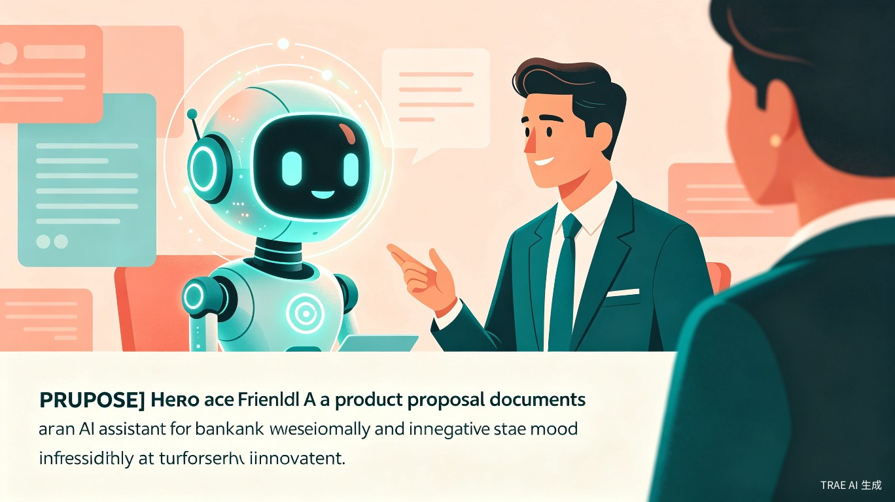

银行客户经理每天都在跟客户沟通金融产品，但很多人面临两个核心痛点：
金融知识储备不足，跟客户聊不深，遇到专业问题就卡壳
有知识但不会转化成客户能听懂的话，沟通效率低，成交率上不去
我在银行负责培训工作，接触大量一线客户经理，发现他们不是不想学，而是没时间学教科书式的金融知识。他们真正需要的是：看到一条财经新闻，能立刻知道怎么用客户听得懂的话讲出来。
微信小程序，每天早上主动推送 1-3 条精选财经新闻，生成四层内容结构：
新闻摘要
专业解读
学习要点
沟通话术
基于 DISC 行为特点生成 4 种沟通风格（D 支配型 / I 影响型 / S 稳健型 / C 谨慎型）
客户经理在给客户打电话前、发微信前，打开小程序，输入今天的重要财经新闻，选择客户类型，拿到一段话术，直接用在沟通里。
| 痛点 | 具体表现 | 后果 |
|---|---|---|
| 准备时间长 | 自己花时间查资料、组织语言 | 沟通准备时间长达 30 分钟 |
| 话术不精准 | 使用通用模板，不够个性化 | 客户感觉不专业，信任度低 |
| 知识储备浅 | 没时间系统学习金融知识 | 长期停留在表面，聊不深 |
| 成交率低 | 客户听不懂、没兴趣 | 沟通效率低，业绩上不去 |
客户经理不用再花时间查资料、组织语言，输入新闻就能拿到话术。而且话术针对不同客户类型个性化，客户更容易听懂，成交率提升。
让金融服务更普惠、更专业。通过提升一线金融从业者的沟通能力，让普通客户也能获得高质量的金融咨询服务，缩小金融信息差，提升全民金融素养。
每条新闻生成四层内容，兼顾客户经理学习与客户沟通双重需求：
提炼核心事实：发生了什么、涉及哪些资产、市场反应如何。让客户经理 10 秒抓住重点。
用经济学/金融学原理解释事件逻辑，讲清与资产价格的关系。如：降息 → 美元走弱 → 黄金上涨 → 对国内债市的影响。
给客户经理的"知识充电包"：关键概念解释、沟通注意事项、常见客户疑问预判。
按 DISC 四种行为风格生成可直接使用的话术，附风险提示与免责声明。
基于行为特点而非资产配置，同一新闻生成四种风格话术：
| 类型 | 行为特点 | 话术风格 | 示例开场 |
|---|---|---|---|
| D 支配型 | 果断、结果导向、没时间听废话 | 开门见山，先说结论和影响 | "张总，有个消息直接影响您的配置……" |
| I 影响型 | 热情、喜欢互动、容易受情绪感染 | 多用比喻、故事，语气活泼 | "张姐，您知道吗？最近有个挺有意思的事……" |
| S 稳健型 | 谨慎、重关系、需要安全感 | 温和细致，强调风险和保障 | "张姐，有个消息想和您慢慢聊聊……" |
| C 谨慎型 | 理性、重数据、喜欢细节 | 列数据、讲逻辑、给依据 | "张总，从数据上看，这次调整有几个关键点……" |
每天早上自动筛选 1-3 条高价值新闻，无需客户经理主动搜索，降低使用门槛。
从"今天发生了什么新闻"出发，完全贴合客户经理的实际工作流，即学即用。
基于 DISC 行为特点生成话术，同一新闻四种风格，精准匹配客户沟通偏好。
专业解读 + 学习要点 + 沟通话术三层内容，让客户经理边用边学，持续提升。